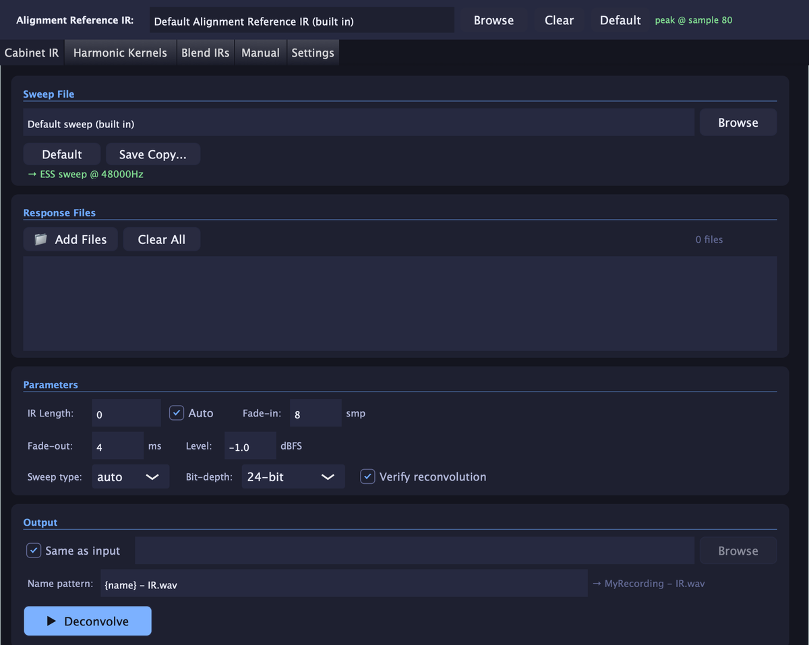

Guides › Cab IR guide · IR Deconvolver
How to Make a Guitar Cab Impulse Response (IR) with a Sine Sweep
By Dillon Taylor, Juniper Studio LLC · Updated October 2, 2026
A cabinet impulse response (IR) is a fingerprint of what a speaker cabinet and a microphone do to a signal. The cleanest way to capture one is a sine sweep: play a known sweep through the cabinet, record what the mic hears, and deconvolve the recording against the sweep. This is the workflow I use with IR Deconvolver, my Mac and Windows app for it, from start to finish.
The same method works for guitar cabs, bass cabs and any other speaker you can put a mic on.
What you need
- A guitar or bass speaker cabinet.
- A solid-state power amp. It drives the speaker without adding the coloration of a guitar amp, so the IR captures the cabinet and the mic and nothing else.
- A microphone, a mic preamp and an audio interface.
- IR Deconvolver, with its built-in default sweep. It has a free 30-day trial.
- A DAW, with the session set to 48 kHz.
- A quiet room.
1. Use the default sweep
IR Deconvolver includes a default sweep, and I recommend using it exactly as it ships. It is an exponential sine sweep (ESS), mono, 48 kHz, 32-bit float and 23 seconds long, with about a second of silence at each end.
Exponential sweeps are the standard for speakers because they separate the speaker's harmonic distortion from its linear response. After deconvolution the distortion lands in its own place just before the main IR, so the IR comes out clean, and the distortion can be measured separately (that is what the Harmonic Kernels tool does).
To get the sweep into your DAW, click Save Copy on the Cabinet IR tab, save it somewhere, and drag it onto a track in a 48 kHz session. Then leave it alone: no level change, no plugins, no trimming.
2. Set up the signal path
The chain is: the sweep on a DAW track, out of the interface's line output, into a solid-state power amp, out to the cabinet, picked up by the mic, through the mic preamp and back into the interface onto a new track.
- Same sample rate everywhere. The default sweep is 48 kHz, so run the session at 48 kHz.
- Only what you want baked in on the record track. The IR includes everything between the sweep and the recording, so put only the things you want in every IR on that path: the mic and the preamp, not an EQ, compressor or amp sim you do not want in the sound.
- Use a solid-state power amp. It is the neutral way to drive the speaker. I do not recommend a guitar amp for this.
- Mic it the way you would for real. Put the mic where you would put it to record that cabinet. Every mic position is its own IR, so capture as many as you like.
- Make sure the impedance is correct. The power amp has to be rated for your cabinet's impedance. With a solid-state power amp that is mostly taken care of for you.
- You usually do not need a reamp box. A power amp input is line level, so the interface's line output can go straight in. A reamp box only matters if you feed an instrument input, which is not what you want here.
No power amp? The effects return is the fallback
It is not recommended, but if you have to use a guitar amp, send the sweep into its effects return so you skip the preamp. Keep the amp clean, with no overdrive, gain, pedals or effects of any kind. The amp's power stage still drives the speaker, so the result carries that amp's coloration and is not neutral the way a solid-state power amp is.
3. Set the levels
Do not turn the sweep file down. Leave it untouched and set the level at the amps instead:
- Raise the power amp level (or the master volume, if you are using the guitar amp method) until the speaker is driven hot enough, within its power rating.
- Then set the mic preamp gain so there is no extra distortion: nothing should clip at the preamp or the interface.
Play the sweep while you set both.
If you do turn the sweep down
Export that turned-down version from the DAW as its own clean file, with nothing else on it, and select that exact file in IR Deconvolver for every recording made with it. Do not use the original default sweep with a recording made from the turned-down one, or the IR will be wrong.
4. Record
Record the whole sweep and let the tail ring out. Record each mic, or each mic position, as its own file.
5. Deconvolve
This is where IR Deconvolver takes over. If you used the default sweep with no changes in the DAW (no level change, no processing), the sweep is already selected in the app. Drop your recordings into the Cabinet IR tab and press Deconvolve. Drop in every recording from the session and each one becomes its own IR in one run. IR length and sweep type are set to Auto, so there is nothing to look up.
If you did change the sweep
The math works sample for sample, so a different copy of the sweep, even one that sounds identical, gives a wrong IR. If you turned the sweep down or altered it in any way before playing it, save that version and point the app at that exact file for every recording made with it.
6. Trim, fade and level
An IR needs its tail trimmed where it falls into the noise, a short fade-out so it does not end with a click, and a consistent level. IR Deconvolver does all three: Auto finds the IR length, you set the fades and the output peak level once, and every IR in the batch comes out the same. Output is 24-bit or 32-bit float WAV, ready to load.
7. Check the result
Turn on Verify reconvolution and the app re-checks each IR against your original recording, so you know it is right before you use it.
8. Align and blend (optional)
Blending two mic positions is a classic way to build a bigger sound, but each position captures the cabinet at a slightly different distance, so the peaks arrive at different times. Layer them unaligned and they partly cancel and comb-filter. The Blend IRs tool lines the two peaks up to the exact sample and matches the second IR's gain to the first, so the blend sums in phase. Every IR you make is also aligned to one shared reference, so they all line up in time with each other.
Common mistakes
Driving it with a guitar amp
The amp's power stage ends up in the IR. Use a solid-state power amp, or if you must use a guitar amp, the effects return with everything clean.
Altering the sweep
Turning it down or processing it in the DAW means the default sweep no longer matches what you played. Set levels at the amps instead.
Clipping the mic preamp
Extra distortion in the recording gets into the IR. Back the preamp gain off until nothing clips.
Sample rate mismatch
The default sweep is 48 kHz. Run the session at 48 kHz from start to finish.
Stuff on the record track
Anything on that path is baked into every IR. Only leave what you want in the sound.
Stopping the recording early
Stop before the tail has rung out and the IR ends abruptly or loses its decay.
A noisy room
Fans, hum and traffic are recorded along with the sweep. Keep it quiet.
Layering IRs that are not aligned
Peaks a sample or two apart comb-filter. Blend with the Blend IRs tool, or align them first.
Do the whole job in one app
Steps 5 to 8 are where most of the fiddly work is, and IR Deconvolver does all of it: batch deconvolution, automatic IR length and sweep detection, trim, fades and level, the reconvolution check, and phase-aligned blending. It can also measure a speaker's 2nd, 3rd and 4th-order harmonic content from the exponential sweep. The default sweep is built in, so there is nothing else to hunt down.

Free 30-day trial, no account and no credit card. Then pay what you want, from $10.
Frequently asked questions
What is a cab impulse response (IR)?
An impulse response is a recording of how a system reacts to a single instant of sound. For a guitar or bass cabinet, the IR captures what the speaker, the cabinet and the microphone do to a signal. Convolve a dry signal with the IR and it sounds as if it were played through that cabinet and mic.
What do I need to make a cab IR?
A speaker cabinet, a solid-state power amp to drive it, a microphone, a mic preamp and audio interface, a DAW, and IR Deconvolver with its default sweep. Set the session to 48 kHz to match the sweep.
Why use a solid-state power amp instead of a guitar amp?
A solid-state power amp drives the speaker without adding coloration of its own, so the IR captures the cabinet and the mic. A guitar amp's power stage becomes part of the result, so the IR is no longer neutral.
Can I use a guitar amp instead?
It is not recommended, but you can. Use the effects return (the power amp input) so you skip the preamp, set the amp clean, and avoid any overdrive, gain, pedals or effects. The amp's power stage will still color the result, so the IR will not be neutral the way it is with a solid-state power amp.
Do I need a reamp box?
Usually not. A power amp input and an effects return are both line level, so you can go straight from the interface's line output. A reamp box only matters if you feed an instrument input, which is not recommended for IR capture.
Do I need to make my own sweep?
No. IR Deconvolver includes a default sweep: an exponential sine sweep (ESS), 48 kHz, 23 seconds long. Use Save Copy on the Cabinet IR tab to put it on a DAW track, and leave it unaltered.
Should I use an exponential or a linear sweep?
An exponential sweep is the usual choice for speakers. It spends equal time in each octave, and after deconvolution it moves the speaker's harmonic distortion to a separate spot before the main IR, so the linear response comes out clean and the distortion can be measured on its own. The default sweep in IR Deconvolver is exponential, and the app detects which kind you played.
Do I need an anechoic chamber or a treated room?
No. For a close-miked guitar or bass cabinet the direct sound dominates and the tail is trimmed, so a normal room works. A quiet room does help, because fans, hum and street noise are recorded along with the sweep.
Why do my blended IRs sound phasey?
Two mic positions capture the cabinet at slightly different distances, so their peaks land at different times. If you sum them without lining the peaks up to the exact sample and matching their levels, they partly cancel and comb-filter. IR Deconvolver's Blend IRs tool corrects the offset to the exact sample and matches the gain for you.
What software makes the IR from the sweep?
IR Deconvolver from Juniper Studio LLC does the whole job in one app for Mac and Windows: batch deconvolution, automatic IR length and sweep-type detection, alignment, reconvolution check, harmonic kernels and IR blending. It has a free 30-day trial, then pay what you want from $10.